| プロメテウスの罠〔５〕 学長の警告「内部被曝、事態は深刻です」 (朝日新聞デジタルＳＥＬＥＣＴ) | |
| 朝日新聞 | |
| (2013) | |
日本の子供がセシウム１３７で体重１キロあたり２０～３０ベクレルの内部被曝をしていると伝えられましたが、この事態は大変に深刻です――。チェルノブイリ被災者の研究を続けるベラルーシのエリート医師はそう警告する。内部被曝が健康に与える影響とその対策を詳報する。２０１２年１２月８日から１２月３１日に渡って掲載された朝日新聞の好評連載「プロメテウスの罠」第５シリーズ「学長の逮捕」全２２回より。
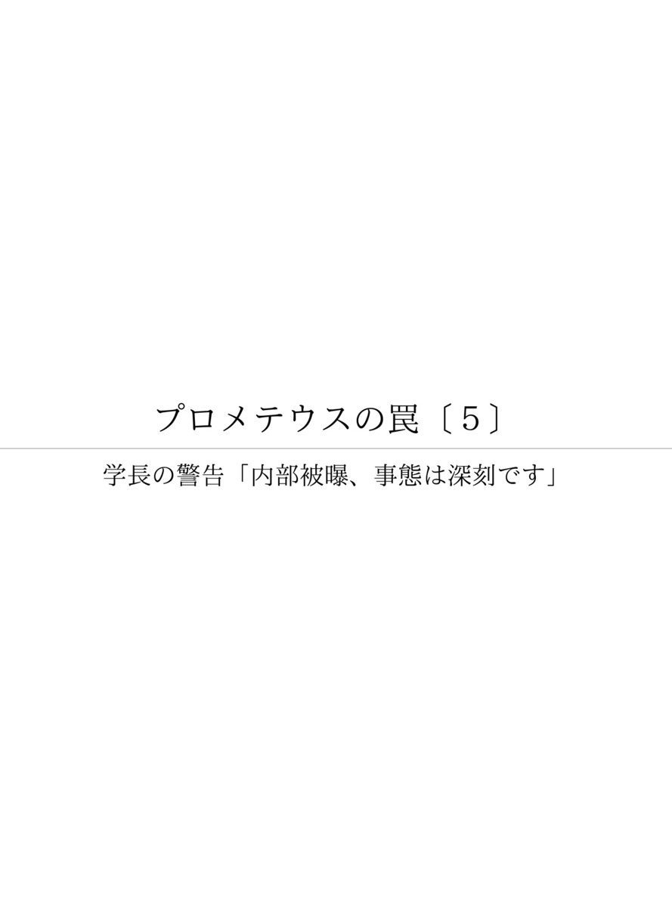
内容紹介
日本の子供がセシウム１３７で体重１キロあたり２０～３０ベクレルの内部被曝をしていると伝えられましたが、この事態は大変に深刻です――。チェルノブイリ被災者の研究を続けるベラルーシのエリート医師はそう警告する。内部被曝が健康に与える影響とその対策を詳報する。２０１２年１２月８日から１２月３１日に渡って掲載された朝日新聞の好評連載「プロメテウスの罠」第５シリーズ「学長の逮捕」全２２回より。
初出
朝日新聞 二〇一一年十二月八日～三十一日
第１章 エリート医師が突然
第２章 研究やめるわけには
第３章 体から放射能を抜く
第４章 免疫力 異なる見解
第５章 森のキノコ食べても
第６章 日本より厳しい基準
第７章 たった１台で検査
第８章 輸入品 すり抜けて
第９章 規制値、食器にまで
第１０章 検査 提案したら
第１１章 給食を確かめたい
第１２章 同じ一家 異なる値
第１３章 自分たちで測るんだ
第１４章 「逆に不安招くから」
第１５章 検査してもらえない
第１６章 不具合を抱えたまま
第１７章 お前ら寝るな休むな
第１８章 調べたい、金がない
第１９章 提案を断った福島県
第２０章 学校で毎日飲むもの
第２１章 最新式との差は１０倍
第２２章 「日本には技術ある」
ベラルーシ共和国第２の都市、ゴメリ。人口約５０万人。１９９９年夏、その町で事件が起きた。ゴメリ医科大学の学長、ユーリー・バンダジェフスキー（５４）が突然逮捕されたのだ。
学生から賄賂を受け取った疑いと伝えられるが真相はわからない。バンダジェフスキーは９０年にゴメリ医大を創設したエリート医師だ。その逮捕は国際的に波紋を広げた。
８６年、チェルノブイリで原発事故が起きた。原発の北にあるベラルーシには大量の放射能がまき散らされた。バンダジェフスキーは事故後、死亡した人を解剖して臓器ごとにセシウム１３７の量を調べた。
その結果、大人と子供、男性と女性で、臓器ごとに量が違うことを突き止めた。たとえば９７年に死亡した人の平均では、子供の心臓には、体重１キロあたりで大人の約４倍のセシウム１３７が集まっていた。
放射線医学総合研究所の元主任研究官、崎山比早子（さきやまひさこ）（７２）は「彼の論文にはさまざまな批判がある。しかし、人の内臓にどのくらいの放射能があるか、解剖して実際に確かめたのは彼しかいない」と評価する。
ベラルーシ当局は、放射線による健康被害は大量の被曝（ひばく）の場合しか認めていない。少量の被曝も影響すると主張するバンダジェフスキーは、政府にとって目障りな存在だ。
国際人権団体アムネスティ・インターナショナルは、彼が政府の被災者への対応を公然と批判したためにでっちあげられた事件だとし、救援活動に乗り出した。しかしバンダジェフスキーは０１年、禁錮８年の判決を受け、服役した。
０５年に釈放される。そして０９年、ウクライナのキエフ市に移って研究を再開したのである。
キエフ市郊外に、チェルノブイリで被災した子供たちの保養施設が集まる地区がある。施設は現在は機能しておらず、周囲には廃虚のような建物も多い。敷地に入ると野犬が集まってくる。バンダジェフスキーとはそこで会った。
「日本の子供がセシウム１３７で体重１キロあたり２０～３０ベクレルの内部被曝をしていると伝えられましたが、この事態は大変に深刻です。特に子供の体に入ったセシウムは、心臓に凝縮されて心筋や血管の障害につながるためです」
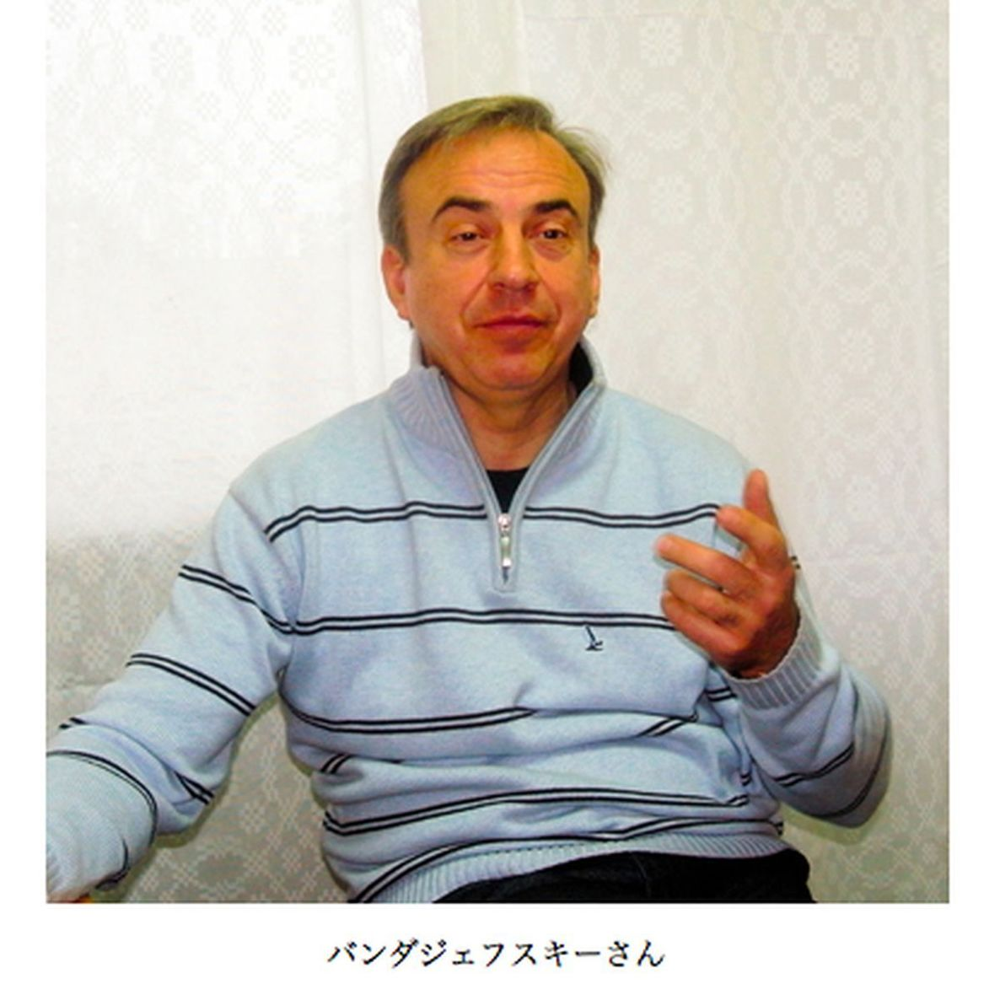
チェルノブイリ被災者の研究を続けるゴメリ医科大学の元学長、バンダジェフスキー（５４）は警告する。
「１キロ当たり２０～３０ベクレルの放射能は、体外にあれば大きな危険はありません。それが内部被曝（ひばく）で深刻なのは、全身の平均値だからです。心筋細胞はほとんど分裂しないため放射能が蓄積しやすい。子供の心臓は全身平均の１０倍以上ということもあるのです」
実際はどうか。チェルノブイリ原発から約３キロのプリピャチ市から、１３０キロほど離れたキエフ市郊外に移住した人たちに聞いた。
１９８６年４月２６日。その日は土曜日で暑い日だった。未明にチェルノブイリ原発が爆発していたが、住民には何も知らされなかった。
いつも通りの週末。結婚式や運動会が予定通り行われ、窓を開けて掃除をする人、家庭菜園の手入れをする人がいた。２７日昼になって、やっと避難が指示された。
移住者代表のタマラ・クラシツカヤ（５５）はいう。
「脳卒中や心筋梗塞（こうそく）で亡くなる人が多い。子供も大人も免疫系が弱っていて、いろんな病気にかかりやすい。子供たちはみんな病気があって、孫の世代でも体が弱い。遺伝の影響があるのだろうと思います」
移住者の一人、ターニャ（５９）の夫は心筋梗塞で死亡した。
「健康で長生きの家系なのに、事故後はぜんそくや心臓病を抱えた。原発事故との関係を認定してもらおうとしたのですが、無理でした」
３年間事故処理作業をしたゲンナージイ（４８）は３０歳で糖尿病になった。高血圧で甲状腺に腫瘤（しゅりゅう）がある。
「夜になると足が痛くなる。ストロンチウムが骨に沈着したためと思います」
リュドミーラ（６２）の夫は糖尿病がもとで死亡した。
「夫の両親にも祖父母にも糖尿病はなかった。母は、今も私よりずっと健康です。当時１２歳だった息子は自律神経失調と心臓病があって、私より体が悪いです」
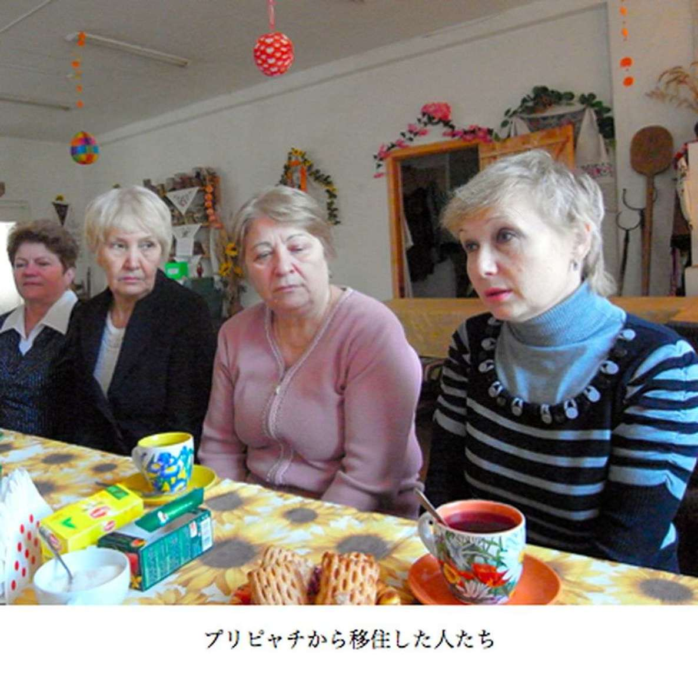
バンダジェフスキーは、汚染地域で子供たちに病気が増えていることに関心を持って研究を始めた。
「被曝の影響は、胎児や小さい子供に大きく出る。遺伝の影響で次世代に現れる可能性もあります」
こうした警告がベラルーシでの逮捕につながった可能性がある。しかし「住民にいろいろな危険があることが分かっている以上、研究はやめられません」。
茨城県日立市に「チェルノブイリの子供を救おう会」という団体がある。原発事故の汚染地域に住むベラルーシの子どもを呼び寄せ、「放射能抜き」をする活動だ。茨城大名誉教授で工学博士の久保田護（まもる）（８７）が１９９３年から続けている。
体内の放射能は、新たな放射能を摂取しなければ確実に減る。「救おう会」では、ベラルーシから毎年４～５人の子どもを招待し、約１カ月、日立市の保養施設で暮らしてもらう。放射能汚染がない場所で汚染がない食べ物を食べる。体重１キロ当たり３０～４０ベクレルのセシウム１３７があった子どもたちが、帰国するころには５ベクレル程度まで減った実績がある。こうした活動は世界中にある。
１１年６月、久保田はベラルーシのゴメリ医科大学元学長のバンダジェフスキー（５４）が書いた論文を日本語に訳し、自費出版した。「人体に入った放射性セシウムの医学的生物学的影響」というタイトルだ。
論文はバンダジェフスキーが禁錮刑判決を受ける前の２０００年に出た。久保田は「以前に翻訳したが、そのままになっていた」。
自費出版のきっかけは、長崎大学教授の山下俊一（現・福島県立医科大学副学長）が「チェルノブイリ原発事故によるセシウム１３７の内部被曝（ひばく）で疾患が増えたという事実は確認されていない」と話していると知ったことだった。
救おう会の設立以来、久保田はベラルーシに１８回通った。山下の発言は、久保田が自分の目で見た現実とは違っていた。
「放射能が原因と断定はできないが、知り合いやその家族が若くして亡くなる。たとえば、かぜをひいて肺炎で亡くなったのが放射能のためとはいえない。でも、免疫力が落ちたのは放射能のためではないか」
医師としてベラルーシで子どもの甲状腺手術を多数手がけた長野県松本市長の菅谷昭（すげのやあきら）（６８）は、久保田からこの論文を送られて読んだ。
「ベラルーシにいる時に、心臓血管系の病気が増えていることを不思議に思っていましたが、この論文で納得しました。解剖した結果ですから、非常に信頼性が高い。がんもさることながら、今後は福島の子どもたちの心臓が心配です」
新たな放射能を取り込まなければ体内の放射能は減っていく。一時的に保養に行ったり、食べ物に気をつけたりするなど、多くの方法がベラルーシでは試されている。
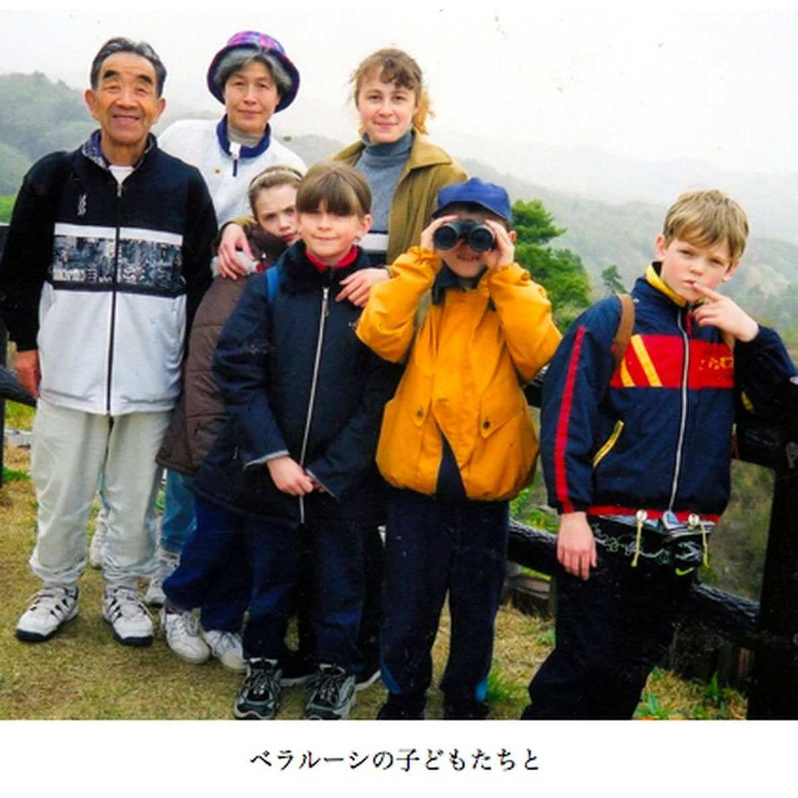
ウクライナのジトミール州コロステン市。チェルノブイリ原発に近く、放射能の汚染度がとくに高いとされている。
ここにある検診センターは州内８地区を管轄する。内部被曝（ひばく）量の検査や甲状腺の超音波診断などで訪れた人たちでごった返していた。
センターは被災者の健康診断のために笹川記念保健協力財団の支援で設立された。１９９１年以来で甲状腺がんを１２９件確認した。多くが９６年からの５年間でみつかった。
副所長のオレクサンドル・グーテビッチは、放射能と子どもの甲状腺がんの関係は明確に認めた。
「事故の時、放射性ヨウ素への対策がとれませんでした。事故前は子どもの甲状腺がんの例はなく、成人もごくわずか。成人の甲状腺がんにはチェルノブイリの影響がないものも含まれるかもしれません」
がん一般では大きな変化はない。
「とくに増えていません。非汚染地区のほうが、汚染地区よりもがん発生率が高いこともある」
しかし免疫力低下について聞くと、歯切れが悪くなった。
「そういう意見も聞いたことはある。ただ、調査には資金と検査機器が必要です。その予算がない」
事故後の早い段階では、日本の他にカナダやキューバなどの支援があった。しかし、いま残るのは長崎大学だけ。甲状腺がん以外に関する調査は優先順位が低いようだ。
センターの管轄内にあるナロジチ地区。診療所で３３年にわたり住民を診続けてきた医師のビクトル・ゴルディエンコ（６２）は、免疫系への影響を実感していた。
「確かに、がんがとくに増えているとはいえません。しかし、免疫系がダメージを受けているのは確実だと思います」
ふつうなら悪化しない病気が悪化しやすい。子どもの場合、かぜなどの呼吸器疾患が目立つ。
「研究者ではないので理由は分からないが、１０年ぐらい前から増えてきているように思います」
受け持つ住民は約１３００人。１８歳未満は２３０人で、小中学生は１３４人。若者は出て行くため、高齢化が進む。ゴルディエンコも老齢年金がもらえる年だが、後継の医師が来ないため診療を続けている。自身も畑を耕し、ニワトリを飼って暮らす。指は農夫のように太い。
住民を見続けてきた彼の言葉は、検診センターが調べ切れていない部分を埋めていた。
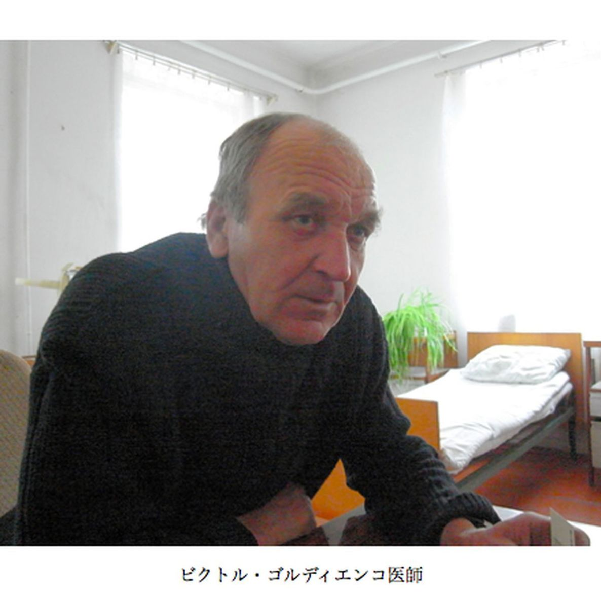
「キノコもベリーも食べている。死んだりしないよ。９０歳とか８６歳の人だっているし」
チェルノブイリ原発の西約６０キロのジトミール州ナロジチ地区の村で、主婦のガーリャ（７８）は、森のキノコやベリーを採って食べる昔からの生活を、今も続けている。
放射線量が高いため、旧ソ連時代に移住が義務づけられた地域だ。ガーリャも一度は避難したが、移住先になじめずに６年前に戻ってきた。事故から２５年、周りには屋根も落ちたような廃屋が多い。
地区の人口は原発事故にともなう移住で大きく減り、約３万人から約１万人に減った。
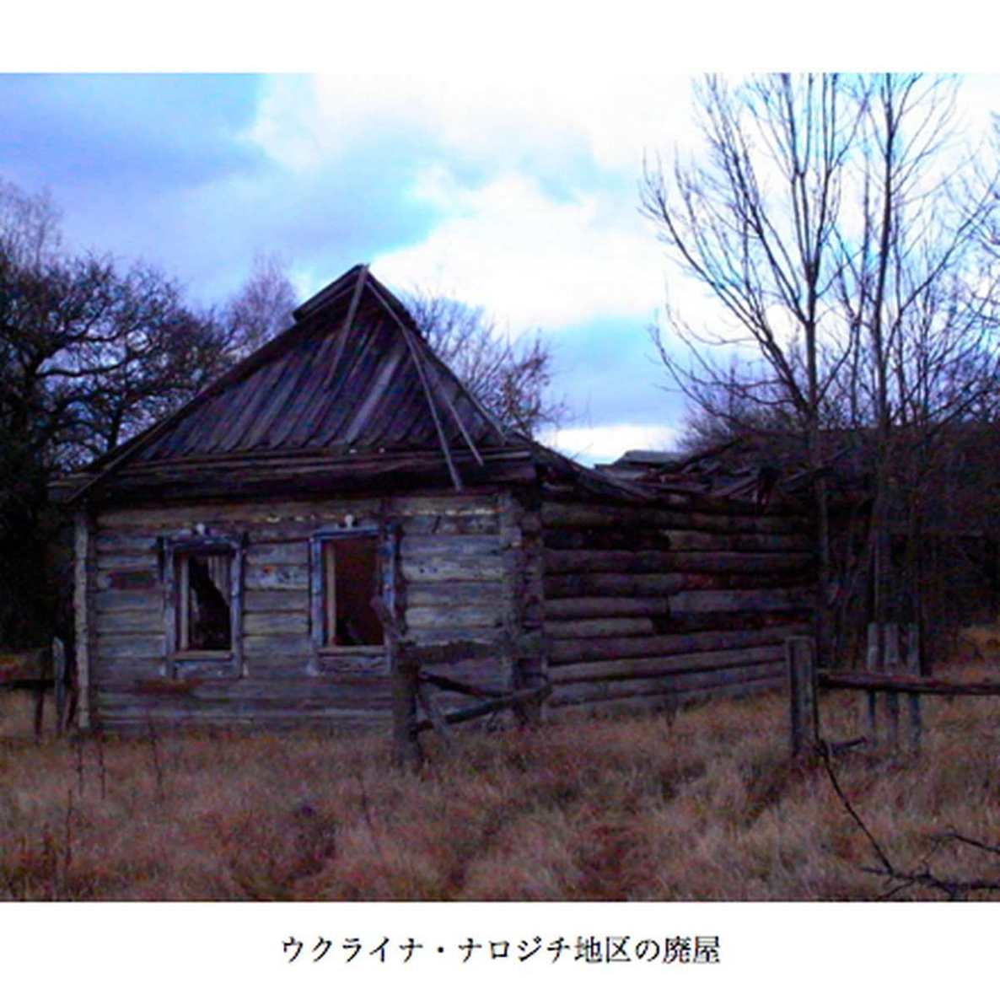
地区保健所の放射線技師ビラデーミル・ミハイルビッチは嘆く。
「森のキノコの汚染度は許容値の５～６倍。イノシシなどの野生動物は原発３０キロ圏にも入るからでしょう、８～９倍です。食べないように指導しているが、住民は聞き飽きたという顔をするだけなんです」
もっとも、放射線の害ばかりでなく、移住のストレスなどの要因も考えたほうがよい人もいるようだ。ナロジチ地区の診療所で３３年間住民を診続けてきた医師のビクトル・ゴルディエンコ（６２）は言う。
「移住した人と残った人を比べると、むしろ、移住した人のほうが早く亡くなる傾向もある。移住した人だって事故の時すでに被曝（ひばく）しているんです。新しい環境に対応できるかどうかも考えたほうがいい」
しかし統計的に見れば、住民の健康悪化は明白だ。
医薬品などの支援をしている日本のＮＰＯ法人「チェルノブイリ救援・中部」（名古屋市）へのナロジチ地区中央病院からの報告によると、児童の呼吸器系疾患が急増しているという。人口当たりの発生率は、１９８８年の１１・６％が０８年には同６０・４％と、約５倍になった。大人の場合、心臓血管系疾患が最近の１０年で急増している。９８年の１・２％が０８年には３・０％と、３倍近い。
ベラルーシ当局に逮捕された経験を持つゴメリ医大元学長のバンダジェフスキー（５４）はいう。
「放射能の影響には個人差がある。汚染されたものを食べて何でもない人もいるが、みんなが大丈夫なわけではない。キノコやベリーを食べて元気な人がいても、それは希望を持てる材料ではないのです」
では、食品の放射能に対する姿勢は、そのウクライナと日本でどう違うのだろうか。
ウクライナの食肉市場に併設された保健所の職員の朝は早い。販売される牛、豚、羊は、販売の前に、全頭の放射能検査をするためだ。
その日、キエフ市中心部に近いルクヤニフスカ市場では、４２頭分の牛と豚が販売された。一頭の中からも様々な部位が切り取られ、合計５００グラムが検査される。４２頭で２１キロ分が検査後に処分された。
検体はマリネリ容器と呼ばれる円筒形の器に詰め込まれる。底に外から内に向けた大きなへこみのある容器だ。突起型のセンサーに、上から容器の底のへこみをかぶせる。数分すると、放射能の量が算出される。
ウクライナの場合、食肉の規制値は、放射性セシウムで１キロあたり２００ベクレルだが、この日は１０～４０ベクレルの間に収まり、すべてが「合格」した。
日本は来春に向けて食品の安全基準の見直し作業が進んでいるが、「暫定」の規制値は同５００ベクレルだ。
日本の暫定値は水と牛乳・乳製品が同２００ベクレルだが、ほかの食品は一律で５００ベクレル。これに対して、ウクライナの飲料水は２ベクレルと厳しく、牛乳も１００ベクレルとされる。食品も、ジャガイモは６０ベクレルで野菜類は４０ベクレル、パンは２０ベクレルというように細かく決まっている。
隣国のベラルーシ共和国も、飲料水は１０ベクレル、牛乳は１００ベクレル、牛肉は５００ベクレルだが豚・鶏肉は１８０ベクレル、ジャガイモは８０ベクレルで野菜類は１００ベクレルなどと決めている。
ベラルーシの民間研究機関であるベルラド放射能安全研究所の副所長、ウラジーミル・バベンコは「国民の食生活に合わせて変更してきた」と話す。
ウクライナでは、国内にある４５の市場の全てに保健所の検査場があり、大きな市場には野菜、魚、加工食品というように、部門ごとに検査場がある。
同じキエフ市のペチェルスカヤ市場では、ジャガイモを一つ一つ皮をむいて、ミキサーにかけてマリネリ容器に入れていた。手間がかかるが、正確に測るためには、食べる部分をすきまなく容器に入れる必要があるためだ。
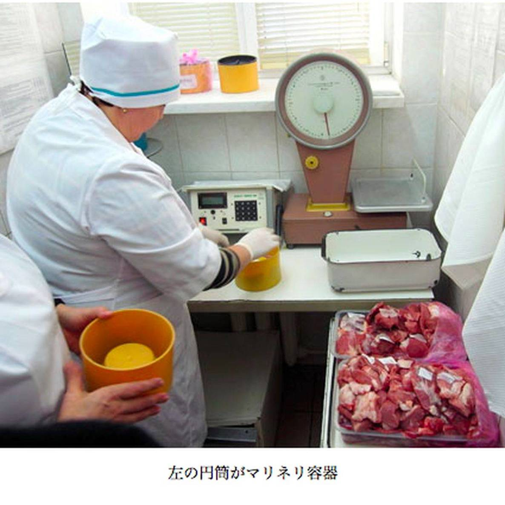
汚染リスクが高い野生のキノコ、ベリー類は全ロットを検査する。２０００年ごろに規制値を超えた牛肉が見つかり、その後、牛、豚、羊は全頭検査が続いている。野菜や果物などは市場の販売店ごとに検査している。
取材しながら、日本の検査態勢が気になった。
東京都はチェルノブイリ原発事故の１９８６年から輸入食品の放射能検査を続けてきた。しかし１１年３月の福島原発事故で、それが続けられなくなってしまった。
事故後、国内産のホウレンソウなどから甲状腺がんにつながる放射性ヨウ素が見つかる。ところが放射性ヨウ素を測れる装置が、輸入食品の検査をしてきた１台だけだった。
ほかにも４台の検査装置があることはある。しかしそれは８６年以来使っている年代もので、セシウム１３７しか測定できない。
都はすぐに補正予算を組んで新しい測定器４台を発注した。しかし納入は１１年９月以降で、それまでは輸入食品用の１台で都内の検査需要に対応せざるを得なかった。
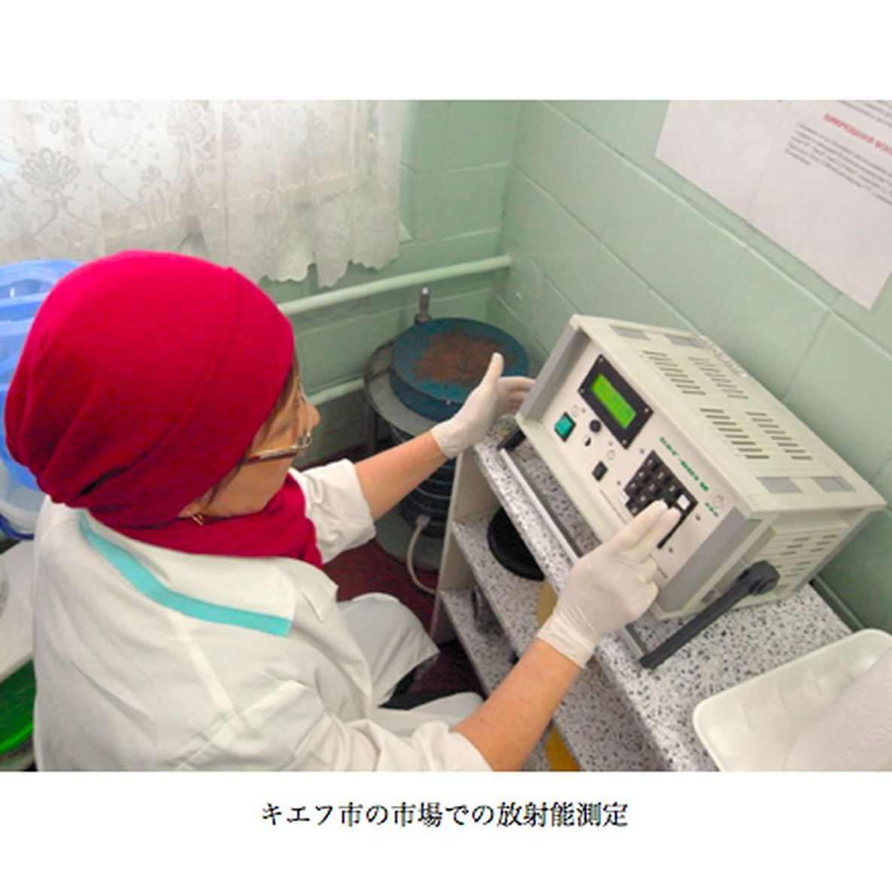
国内産の食品の放射能検査は主に都道府県の役割だ。厚生労働省は１１年３月１７日に食品の暫定規制値を定め、都道府県などに食品の検査をするよう求めた。
都は地元産の米、肉、野菜、果実、魚介類などを検査する。当然、１台では限界があるのでサンプル調査にならざるを得ない。さらに、都内で食肉処理される福島県など４県産の牛は、全頭検査などが求められた。そのため、ほかの食品のサンプルの割合は減ることになった。
東北、関東甲信越などの１４都県を対象に、国が検査の具体的方法を示したのは１１年６月だった。それは「問題がない場合」には、野菜・果実は月単位、牛乳は２週間おき、水産物は週１回などを原則とするものだ。
「問題がない場合」とはどういう意味なのだろう。
厚労省食品安全部の技官、富田耕太郎は「一般的には１キロ当たり５００ベクレルを超えないということです」。
となると、５００ベクレルを超えるまでは、野菜・果物の検査の頻度は変わらないことになる。
「実際に影響が出る値はもっと高い。しかしその値に設定することはできないので、いまは５００ベクレルで線を引いています」
だが、５００ベクレルはあくまでも暫定規制値のはずだ。いま見直し作業をしているのではないか。
「いまの値でも十分に安全性を考慮している。より安全性を考慮するため、さらに厳しい規制を検討している、ということです」
ゴメリ医大元学長のバンダジェフスキー（５４）は警告する。
「遠慮抜きにいわせてもらえば、日本の暫定規制値は大変に危険です」
東京都は福島原発の事故の後、２５年間続けてきた輸入食品の放射能検査ができなくなった。
実は、輸入食品の検査は、本来は国の担当で、検疫所が実施している。食品が国内に入る時点で、１９８６年の暫定限度値、１キロ当たり３７０ベクレルで２５年間検査してきた。
これに対して東京都は、独自の事業として、小売店で買った輸入食品を検査してきた。
それによると、０９年度は３２８検体を調べて、フランス産ブルーベリージャムで暫定限度値を超える５００ベクレルのセシウム１３７を検出した。検疫所のサンプリングから外れたものが店頭に並んだと見ることができる。
さらに、限度値を下回るものの一定の放射能が検出された食品がほかにもあった。
キノコ類４検体から１００～２３０ベクレル、ブルーベリー加工品３検体から９０～１４０ベクレルのセシウム１３７。国民は、知らずに基準を下回る放射能を体内に取り込んでいる。
基準となる値の考え方について、ベラルーシのベルラド放射能安全研究所副所長、ウラジーミル・バベンコはこう話す。
「ベラルーシは基準を下回る食品に認定証を発行します。認定証には１キロ当たり何ベクレルだったかが書いてある。消費者は実際の数値を知ることができます」
当局が白黒をつけてしまわず、消費者に情報を提供することで、市場原理が働く。これで、放射能濃度が低い食品は売りやすい一方、高い食品は売れにくいことになる。
「生産者はどうしたら売れるかを考えるので、農地の除染などの対策が進むことにつながります」
都の調査によると、フランス、ベルギーなど、チェルノブイリ原発から１５００キロ以上離れた国の食品からも放射能が見つかっている。放射能の影響は広範囲に及ぶ。
しかし現在の日本では、福島県でさえ、測定器１０台を郡山市の県農業総合センターに置いて検査する態勢ができたのは１１年９月だった。
それにしても、輸入食品の暫定限度値は３７０ベクレルなのに、国内食品の暫定規制値はなぜ５００ベクレルなのか。
厚生労働省食品安全部はいう。
「輸入食品は欧州の一部の地域が対象で、平常時の基準値です。それに対し、今回の事故は日本にとって緊急時なので、少し緩める必要がある。それは国際的にも認められています」
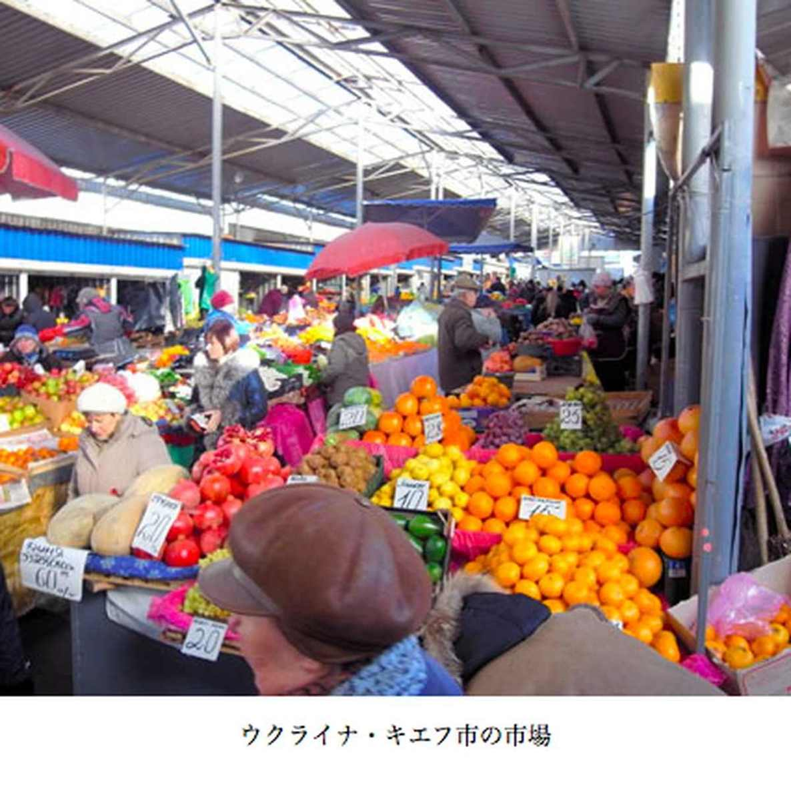
「このカップは５５２ベクレル入っています。こっちは５３３......」
ウクライナのキエフ市にある国家規格研究所の製品検査の責任者、ウラジーミル・ブイコフスキーは、棚に並んだコーヒーカップから検出された放射能測定値を読み上げた。ウクライナでは、食器にも規制値があり、１キロあたり３７０ベクレルを超えると販売が認められない。
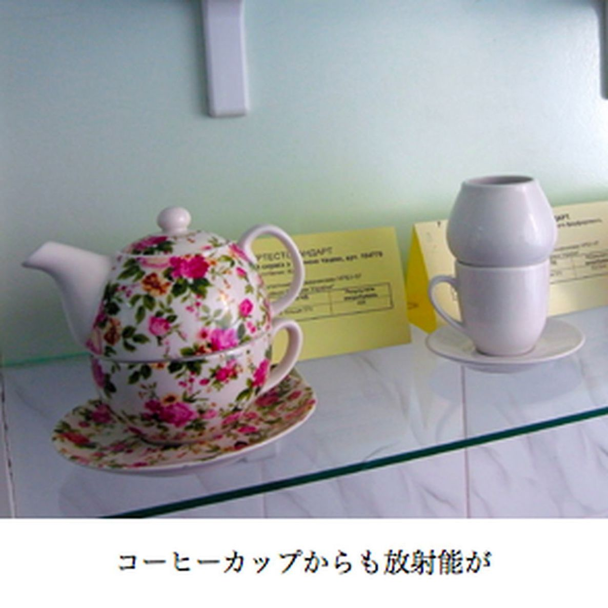
「産地で放射能の核種が変わります。パラジウムだったり、トリウムだったり。チェルノブイリ事故で汚染されたので、なるべく身の回りの放射能を減らしたい」
食器だけではない。子どものおもちゃや、バーベキューの炭も規制値を超えると販売できない。建築資材は住宅用が一番厳しく、次はオフィス用、さらにオフィス以外用と、それぞれ基準が決まっている。
ウクライナでは、旧ソ連の崩壊後、放射能に関する規制を緩めた。ところが、食品の放射能汚染度が高くなり、１９９０年代後半に国民の内部被曝（ひばく）量が増えてしまった。そのため、国内の規制をふたたび強化した経緯がある。今は、その厳しいウクライナの基準を国際基準にする提案もしているという。
「この研究所では、ストロンチウムの計測もしています」
ウクライナ衛生局の食品研究所には、ストロンチウム９０が計測できる装置があった。
測定しやすいガンマ線を出すセシウムに対して、ストロンチウムが出すベータ線の測定は難しく、日本では時間がかかるとされる。ウクライナの測定器は、粉状にした検体をトレーに載せて計測する。コーヒー豆のミキサーが使われていた。
測定器を開発したアトム・コンプレックス・プルイラド社の社長オレクサンドル・カジミーロフはいう。
「ストロンチウムは、体内に取り込むと骨に沈着する。危険度が非常に高いため、ウクライナの規制値は厳しく設定されています」
たとえば、肉はセシウム１３７の場合１キロ２００ベクレルだが、ストロンチウム９０は２０ベクレル。ジャガイモはセシウム１３７の６０ベクレルに対して２０ベクレルと低い。
日本にはストロンチウムを短時間で測る態勢がない。そのため規制自体がまだない状態だ。
ゴメリ医大元学長のバンダジェフスキー（５４）はいう。
「今後、放射能が土壌に浸透して野菜が吸収しやすくなる。内部被曝の心配はこれからです」
１１年１１月１４日、南相馬市の市立総合病院非常勤医師、坪倉正治（２９）に、副市長の村田崇（たかし）（３７）から電子メールが届いた。激しい非難の文言に、坪倉はびっくりした。
「特別職に対して原因を調べろという趣旨のメールになっていますから、私に対してはともかく、市長に対しては失礼極まりない......」
坪倉は東大医科学研究所の医師だが、原発事故後、希望して南相馬にやってきた。福島原発から２３キロの地点で、多くの医師が避難し、医師不足に陥っていた。そこで週の半分を勤務する。
坪倉が力を入れているのは市民の内部被曝（ひばく）の検査だ。
検査は１１年７月に始まった。ホールボディーカウンターと呼ばれる装置で体内の放射能量を測定する。東大理学部教授で物理専攻長の早野龍五（りゅうご）（５９）に相談しながら進めてきた。
早野は学校給食の放射能検査を各地の自治体に提唱している。南相馬市長にも提案した。
「学校給食を１週間分まとめて検査する、という提案です。費用はこちらで負担するとも伝えました」
しかし返事が来ない。早野から話を聞いた坪倉は、市長と副市長あてにメールを送った。
「今後は食べ物の検査態勢の強化が重要と考えております。ご検討いただけますと幸いです」
これに対する返信が、冒頭の激しいメールだった。メールは続く。
「市職員として最低限守るべきことは何なのかを再度見つめなおしていただき、日ごろの業務にあたっていただければと思います」
「ご自身の責任や立場を踏まえられた行動をお願いしたい」――
坪倉の要請にはいっさい触れず、「職員の立場で特別職に指図するとは何事か」という内容である。
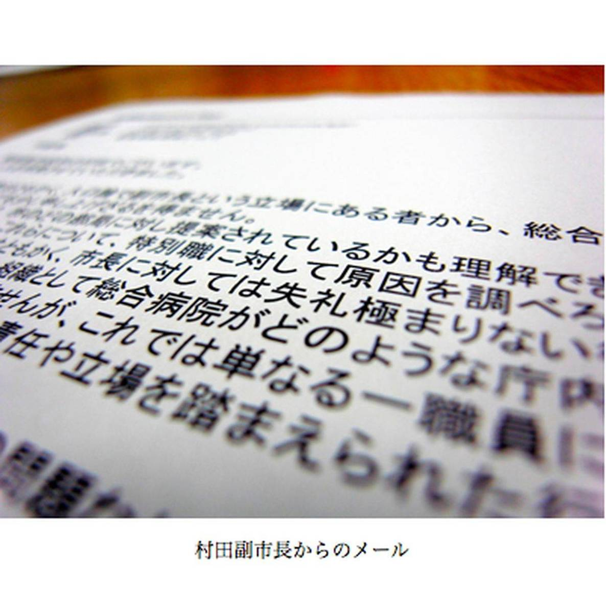
副市長の村田は、総務省から１１年４月に出向してきたキャリア官僚だ。この件について取材を申し込んだ。秘書課から「この取材には応じないことになりました」と電話が来た。
直接、南相馬市の秘書課を訪れ、再び取材を申し入れた。秘書課長補佐が対応したが、あくまで市役所内部の行き違いの話でしかないと、話が進まない。
重ねて面会を求めると、秘書課長が出てきた。
「市立病院をいかに守り、市民のために機能させていくか検討している最中なので、いまは回答できません。それより、市役所内の話がどうして外部にもれたのか」
「きょうは実習つきで、そのあと試験をやります。......ウソ、ウソ」
１１年１１月末、福島県相馬市役所の会議室で、東大理学部教授の早野龍五（５９）が、市職員を笑わせていた。
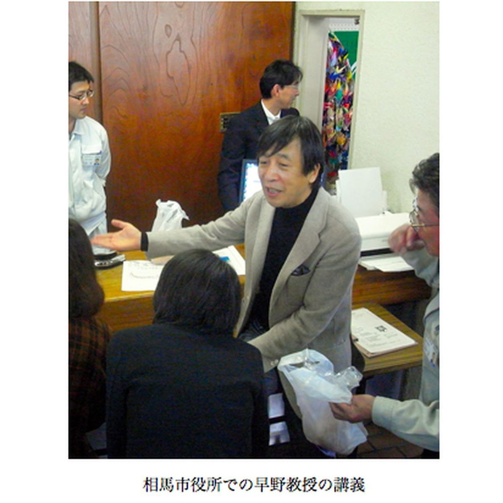
早野は南相馬市に学校給食の放射能検査を申し入れ、断られた。しかし北隣の相馬市は、すぐに全小中学校、１５校で検査することを決め、早野の助言を受けることにした。
この日は、相馬市が導入した市民向けの放射能測定器の研修講師として呼ばれた。講義後、市庁舎１階で測定器の実習をした。
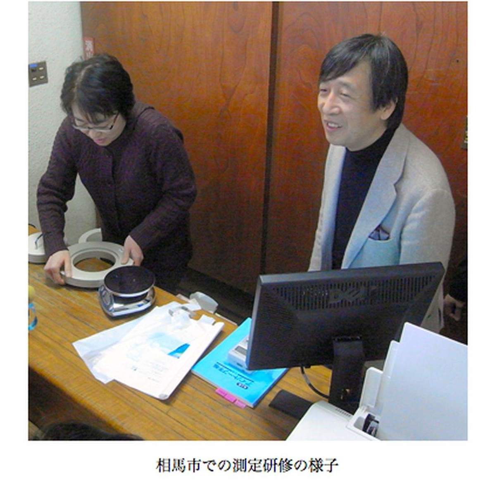
果物や魚、塩などいくつかの食品を測る。柿から放射性セシウムが検出された。職員からため息が出る。
コンピューターがグラフを映し出す。波線がポンとはね上がっている部分がある。「これは３０ベクレルぐらいです。出ると残念だけどね」
早野の提案の特徴は、１週間分の学校給食をまとめて後で検査することで、測りきれない放射能量を減らすことにある。
学校給食はお昼までに作らないとならないので、届いた食材を前もって全部測るのは難しく、抜き取り調査になりがちだ。抜き取りだと計測漏れが出るので、毎日１膳ずつ冷凍保存し、１週間分をまとめてミキサーにかけ、漏れのないようにする。
検査機器には検出できる放射能量の限界があって、不信の要因になっている。早野方式はすでに神奈川県海老名市、千葉市などで採用されている。高性能の機器で時間をかけて測定しており、実績を見ると、検出限界は放射性セシウムで１キロ当たり１ベクレル程度と、かなり精密に測れている。
１１年１０月に採用して８週の検査をした神奈川県横須賀市では、１１月第４週に検出限界をわずかに超える値が検出された。保護者から数件の問い合わせがあったが、簡単な説明で理解を得られているという。
この方式の費用は１週間分で１万５千円。早野は自分で払うと南相馬市に提案したが、無視された。
南相馬市立総合病院医師の坪倉正治（２９）はこの不採用に驚き、市長と副市長にメールを送った。その結果、副市長の村田崇（３７）から厳しく注意されることとなった。
坪倉には知りたいことがある。南相馬市の子どもたちの体内の放射能量は減る傾向にある。一方、親たちの中には増えている人もいる。
それはなぜか。食品に関係があるはずだ。それを知るには、子どもの給食を確かめたい。
福島県南相馬市の市立総合病院医師、坪倉正治（２９）は住民の放射能汚染の状況を調べていて、同じ一家の親と子どもでも、内部被曝（ひばく）の値に差があることに注目した。
「親子で体内のセシウムの量が２０倍も違う例もありました。聞いてみると、親は自宅で採れた野菜や果物を食べていましたが、子どもの食事には注意をしていました」
坪倉らがこの秋行った調査で、小中学生５２７人のうち２６８人から、セシウム１３７が見つかった。中には体重１キロ当たり２０ベクレルを超える子が４人いた。
しかし追跡調査で、比較的高かった子どもたちの数値も、多くが半分以下に下がっている。
北隣の相馬市の教育部長、臺内（だいうち）吉重は、その理由をこう見る。
「親は、自分では畑で採れた野菜を食べても、子どもの食事にはスーパーで買った食材を使う。親子の料理を作り分けている家庭も多い。家族が子どもの食事に真剣に気を配っています」
相馬市は１１年１２月から、市民の自家消費用の野菜や果物の放射能測定を始めた。
検査の初日、キウイから１キロあたり５１８ベクレルが検出された。暫定規制値を超えている。県に持ち込んで精密計測したところ、５９０ベクレルが検出された。１１年１２月８日、県は相馬市のキウイを「出荷制限」の扱いにした。
相馬市は測定結果をホームページで公開している。食材ごとに、市内のどの地区から持ち込まれたものからどれだけの放射能が検出されたかが、一覧表でわかる。
同市農林水産課の課長補佐、伊東博之は、そのねらいを話す。
「私は専門家ではないので、結果の分析について説明するわけにはいきません。しかし公表された数値から、市民は放射能汚染の傾向をある程度つかむことができます」
これまでの公表結果を見ると、ユズやブルーベリー、ミカンなどの果物から一定量の放射性セシウムが検出されている。特にキウイの検出頻度が高く、数値も比較的高い。米からの頻度は今のところ低く、野菜も比較的少量にとどまっている。
しかし、野生の食べ物には注意が必要だ。
干した野生キノコのコウタケからは、３８９３ベクレルと、高い数値が出た。相馬市の計測結果ではないが、県内各地で捕れたイノシシからは高い数値が出ており、県は食べないよう求めている。
南相馬市の高橋慶（けい）（４１）は１１年１０月、放射能対策の市民団体「アクティブ＆セイフティー（Ａ＆Ｓ）福島」を設立した。
２００９年まで原発技術者として福島など各地の原発で働いた。
福島原発事故で一番驚いたのは、大量の放射能が飛散したのに、政府も県も「大丈夫、大丈夫」と繰り返していたことだ。
「原発で働いていた時は、液体と粉末を外に持ち出すには必ず放射能の分析をした。汚染物質を誤って外に出すと報告書を求められた。あの厳しさはいったい何だったのか」
一部が原発の２０キロ圏にある南相馬市では、高橋が０９年から始めた水産加工の仕事はできなくなった。
１１年６月、ＮＰＯ法人「チェルノブイリ救援・中部」（名古屋）が、南相馬市の放射能汚染地図を作る活動を始めた。５００メートル四方のブロックごとに市内の放射能を測定する。

名古屋からわざわざ来てくれた人に協力したい、自分で測定して確かめたい。そんな住民が集まって手伝い始めた。高橋もその中にいた。その地元住民が設立したのが「Ａ＆Ｓ」である。
「救援・中部」は９０年以来、チェルノブイリ事故のウクライナで被災者を支援してきた。福島の事故で、今度はウクライナの人たちが募金活動をし、線量計１００台を「救援・中部」に贈ってきた。
そのうち５０台が１１年１１月、Ａ＆Ｓに託され、住民に貸し出された。「救援・中部」からは食品の測定装置の運営も任された。高橋は２０１２年から、それを使った測定を始める予定だ。
「市役所も測定を受け付けています。しかし、すでに出荷停止になった柿やビワなどは測らない。スーパーの食品も測らない。私たちは区別せずに測るつもりです」
政府は１２年度から放射性セシウムの規制値を１キロ当たりで水１０ベクレル、牛乳５０ベクレルに下げる方針だが、水も牛乳も毎日飲むものだ。心配なので、自分たちの測定値は定期的に公表する考えでいる。
高橋は１１年１１月に市立総合病院で、体全体の被曝（ひばく）量を測る「ホールボディーカウンター」の検査を受けた。体重１キロ当たり約１５ベクレルで、大きな値ではなかった。
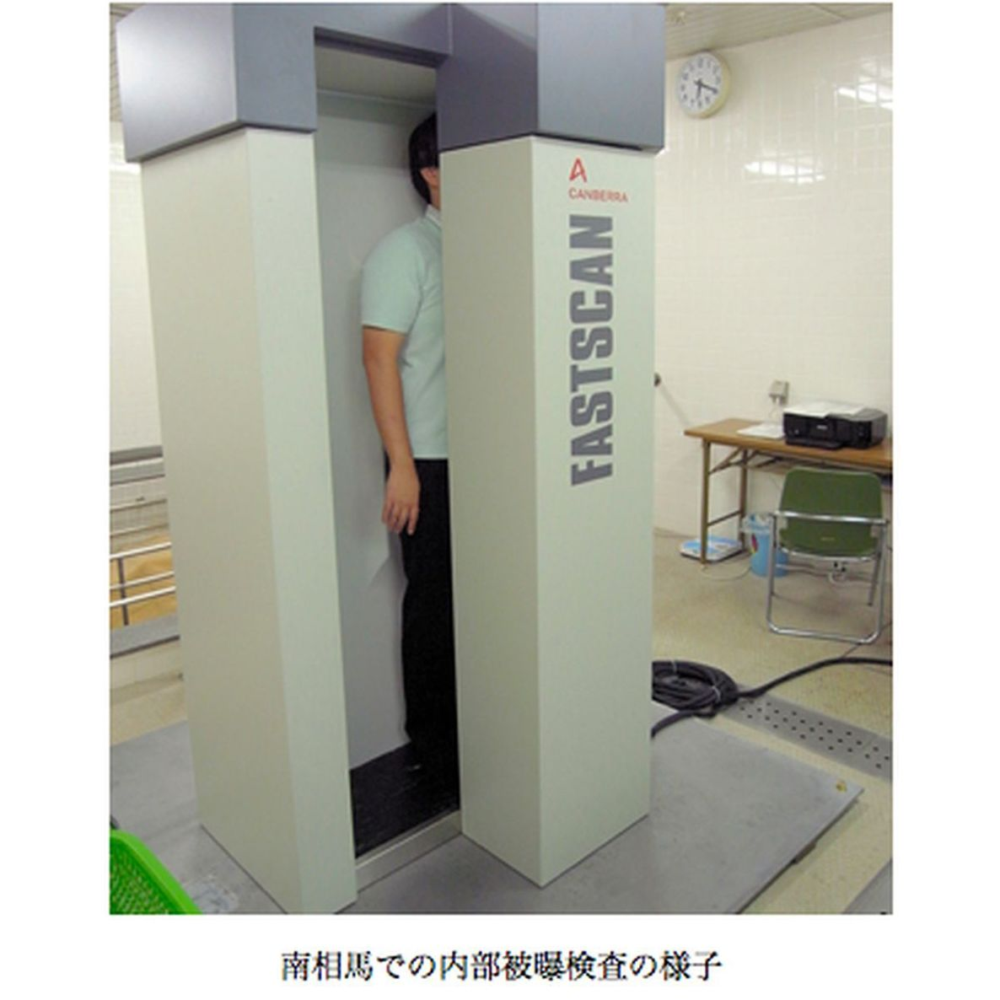
「でも、事故直後に検査を受けていればずっと高かったはずです」
高橋は事故後、装置を持つ施設を探しては電話し、計測を依頼した。しかし、すべて断られた。
それはなぜか。
南相馬市の市民団体「アクティブ＆セイフティー福島」代表、高橋慶（けい）（４１）は、原発事故後に自分の内部被曝（ひばく）を知りたくて、ホールボディーカウンター装置を持つ各地の機関に検査を要請した。しかし、電話したすべての機関に断られた。
全身の放射能量を推計して内部被曝を調べる装置だ。立ったり座ったり、装置によって計測方法に違いはあるが、国が確認している分で全国に１０６台ある。
なぜ高橋の要請は断られたのだろう。
茨城県立中央病院は、一般市民の検査を一件もしていない。茨城県保健予防課はこう説明する。
一、福島県が公表した県民約６６００人の被曝量が極めて低かった。
一、福島県が内部被曝の検査対象とした地域に比べ、茨城県の空間放射線量は極めて低い。
一、以上をもとに放射線被曝の専門家に聞いた結果、「内部被曝検査などの健康調査は必要ない」という判断となった――。
その専門家は６人という。名前を尋ねたが、県は明かさなかった。
茨城県は１１年１１月２８日、「放射線の健康影響に関する専門家による意見交換会」を開いた。
その内容について、茨城県知事の橋本昌（６６）は、翌２９日の記者会見でこう語っている。
「行政が必要と判断したからと住民側が判断し、受けなくてはいけないと思われてしまい、逆に不安を招いてしまうといったようなご意見もございました」
ホールボディーカウンターで検査すること自体が、住民の不安をあおりかねないという発想なのだ。
佐賀県唐津市の唐津赤十字病院も検査を受け付けていない。
「健康に影響を及ぼすような明らかな内部被曝の可能性があれば、装置を所有する佐賀県と相談して検査も検討する。しかし不安解消のための検査は受け付けない」
神奈川県相模原市の北里大学病院は回答を拒否した。
「担当部署が多忙なので北里病院としては回答しない」
これに対し、長崎大学病院国際ヒバクシャ医療センターは、１１年１０月末までに６５３人の検査をした。
対象は原則として福島県民。長崎に避難していたり、検査を希望してやってきたりした人々だ。福島県民以外でも、医師が必要と認めたり、検査を強く希望したりする人には応じている。
内部被曝（ひばく）を測るホールボディーカウンター。長崎大のほかにも検査を受け付けている機関はあった。
北海道がんセンターは３５８人を検査した。対象は福島県から避難してきた人たちだった。新たな放射能が入らなければ、体内の放射能は減る。検出が難しくなったことから、１１年９月末で検査をやめた。
新潟県立がんセンター新潟病院。１１年１２月７日までに１５９人を検査した。対象は「福島県が選定した者」だけだ。
愛媛県は伊方町民会館で１１年１２月、福島県から避難した１１人の検査をした。ほかにも避難してきた人を把握しているが、対象はやはり「福島県の指定」だった。
検査をしていない機関の多くは、「国や県から依頼がない」としている。
調べていくと、石川県のように独自の基準を設定している自治体もあった。石川県立中央病院は検査をしていない。理由は「検査基準を超える人がいない」だ。「スクリーニング検査」の結果だという。
同県医療対策課によると、それはこのような検査だった。
（１）上着を着た状態で線量計をあてる。
（２）１０万ｃｐｍ（１分間に計測する放射線の数）を超えた場合、上着を取り、ウエットティッシュで体をふいてもう一度測る。
（３）それでも１０万ｃｐｍを超えた場合、ホールボディーカウンターの対象とする――。
福島県内で避難した人の多くはこうしたスクリーニング検査を受けたが、福島から石川に避難した人の中には受けていない人もいた。
そうした人たちの要望を受け、１１年３～４月に保健所などで検査した。約１００人を検査したが、いずれも「基準」に達しなかったという。
上着を脱いでウエットティッシュでふいてなお１０万ｃｐｍが測定される。それほど多くの放射能が体についた人でなければ、ホールボディーカウンターにたどり着けないのだ。
しかも食事を通じて体内に入った放射能量は、線量計をあてるだけでは測りようがない。
それに対し、人々の不安に応えようという動きも出てきた。
広島大学緊急被ばく医療推進センターは、１１年１２月１９日までに５４人を検査した。いまのところ、福島県民と、国が指定した避難指示区域に立ち入った人が対象だ。しかし今後は対象を広げる予定という。
１１年７月末、南相馬市立総合病院の医師、坪倉正治（２９）は、病院駐車場にとめたバス移動式のホールボディーカウンター（ＷＢＣ）で、住民の内部被曝（ひばく）の検査をしていた。
しかし、どうも検査結果がおかしい。体が大きい人の放射能量は低く出て、小さい人は高く出る傾向があるのだ。
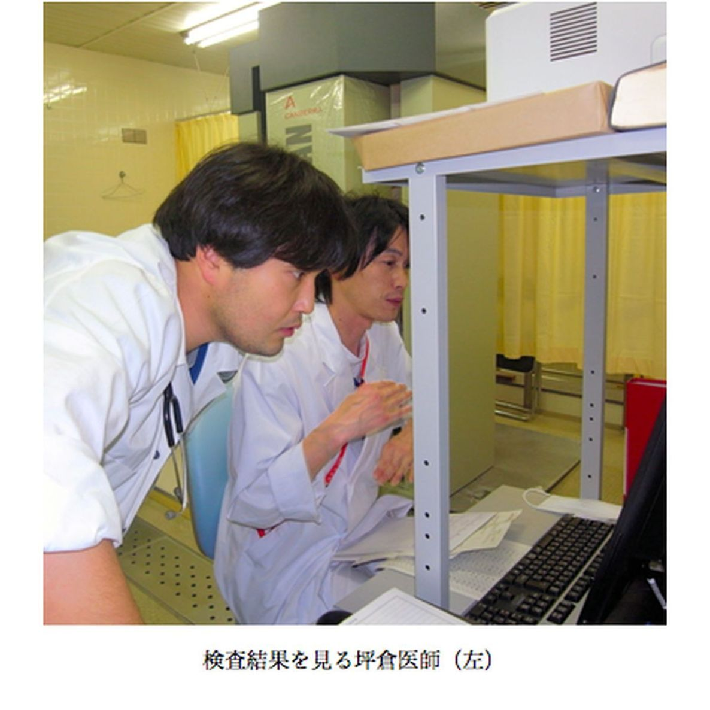
この検査機は市長の桜井勝延（かつのぶ）（５５）が全市民を対象とした内部被曝調査の方針を打ち出したのを受け、副市長の村田崇（たかし）（３７）がいち早く動いて鳥取県から借りてきたものだ。１１年７月１１日から検査を始め、１日４０人のペースで検査を進めていた。
その検査結果がおかしいのだ。市立病院は、福島県から別のＷＢＣを借り、１１年８月中で鳥取県の検査機の使用をやめた。
検査結果がおかしいのは分かった。しかし、これまでの検査データだけは何とか救いたい。坪倉は機械のメーカーに問い合わせた。ところが、社長が菓子折りを持って謝りに来ただけで返事がない。
１１年１１月に東大理学部教授の早野龍五（５９）に相談した。早野が問い合わせたところ、メーカーはプログラムに間違いがあることを認めた。
ＷＢＣは、空中を放射線が飛び交う中で、人の体内にある放射能だけを測る検査機だ。それをより分けて、放射能の種類ごとに体内に存在する量を推計するようプログラムされている。そのソフトにミスがあったのだ。
メーカー担当者は説明する。
「ソフトにバグがありました。ほとんど使われていないのでバグはわかりませんでした。検査データは大丈夫です。メンテナンスも不十分で、部品を交換しました」
ＷＢＣ検査機は１９９９年の東海村ＪＣＯ臨界事故で、各地の自治体や病院が約３０台を備え付けた。１台が数千万円もする高価な機械だ。
部品には消耗品もあり、一定期間で取り換えなければ使えない。しかしＪＣＯ事故以来、一般人がＷＢＣを必要とする放射能事故は起きていない。
そのため、多くの検査機はほとんど使われない状態だった。少なくとも、このメーカーは全国で１０台を納入したが、部品交換などで呼ばれることは少なかったという。
全国のＷＢＣを持つ機関は動きが鈍い。しかし、坪倉は内部被曝を正確に測ろうと突き進む。坪倉のその行動で、ＷＢＣが活用されない真相が明るみに出始めた。
南相馬市立総合病院院長の金沢幸夫（５８）は１１年３月１３日、Ｘ線写真のフィルムが感光していることに気づいた。院内に原発事故の放射能が入ったのだ。病院の表玄関を閉めて、窓に目張りをし、換気を止めた。
「これは内部被曝（ひばく）した人がいるだろう、と思いました」
病院は原発から２３キロ地点にある。海岸からは３キロ。震災後、泥まみれの患者が次々に運び込まれ、待合室にマットを敷いて対応した。
福島第一原発３号機が爆発した１１年３月１４日、職員に自己判断で避難するよう伝えた。入院患者も避難させ、３月２０日にはゼロになった。約７万人の市民は避難で約１万人に減った。震災前に１４人いた常勤医師は４月３０日には４人に減った。
１１年５月半ばに救急患者の入院が認められ、少しずつだが病院の機能が戻り始める。６月に入り、気になっていた内部被曝の検査に向けて動き始めた。
そして６月末、鳥取県が貸与してくれたバス移動式の検査装置、ホールボディーカウンターが届く。避難者を含む約７万人の内部被曝検査プロジェクトが動き出した。
バス式検査装置は１日４０人の検査が限界だった。そこで、２０１１年度末までに約７千人の検査をする計画を立てた。
１１年７月６日に受け付けが始まると希望が殺到する。病院の電話はパンク状態になった。７月２５日には予定を３千人上回る約１万人に達した。
職員は予約の確認に追われた。放射線量が高い地区の住民から優先的に電話をかけ、日程を決めていく。
「早くしてくれ」と催促する電話がひっきりなしにかかる。わずかな人数の職員は「対応が遅い」と責められた。
事務職員（５３）は、検査が市の健康診断プロジェクトだったことも影響したと見る。
「公的病院の職員なので、行き場のない気持ちをぶつけやすいのでしょう。事務処理が遅いのはお役所仕事のせい。お前ら寝るな、休むな、という調子で、こたえました」
１１年９月、市が約５千万円を出した最新式の検査装置が入った。精度が高く、検査時間も短くなった。今では１日６時間で１１０人の検査をしている。身長体重を測定し、記録を残す担当者も含めて７人がかりだ。数少ない職員が激務に耐えている。
しかし大きな問題がある。検査で病院には１円の診療報酬も入ってこないのだ。
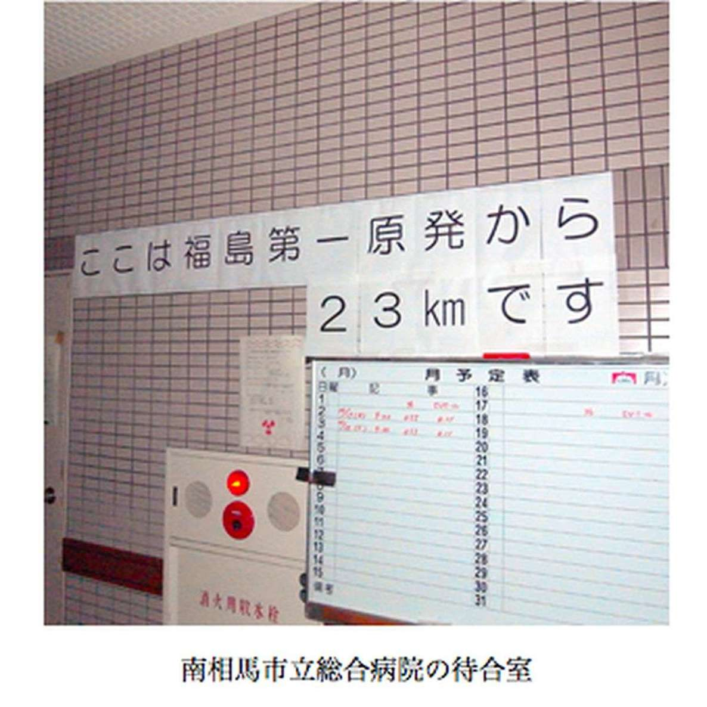
１１年７月にホールボディーカウンターによる内部被曝（ひばく）検査を始めた福島県南相馬市立総合病院。検査自体は２分で終わる。その説明が大変だ。
「５０年とか７０年とか、そんな長期の話を聞きに来たんじゃない。これまでの被曝量を知りたいんだ！」
「そういわれても、この検査は現在の体内の放射能量を出すだけなんです。今までの内部被曝量を正確に出すことはできないのです」
「難しそうなことをいって、都合が悪いことを隠しているのでしょう。ちゃんと教えてよ」
検査結果は郵送で知らせ、説明を希望する人に来院してもらう。ところが、通知には「預託実効線量」など聞き慣れない言葉が並んでいて理解しにくい。
預託実効線量は推計値でしかない。検査でわかるのは体内にある放射能量（単位・ベクレル）だ。そこから一定の仮定に基づいて、大人で５０年間、子どもで７０歳までという長期にわたる被曝量（単位・シーベルト）を推計する。
放射能汚染に直面している南相馬市民は、外部被曝にどれだけの内部被曝が加わるかに強い関心がある。そのため、知りたいのは年間被曝量（単位・シーベルト）なので話がかみ合わない。
説明は１人２０分で計画されているが、長い人は１時間を超える。
待たされる人も多く、難しい説明に我慢できなくなる人もいる。
事務職員がいう。
「説明を聞きに来て、最初からけんか腰の人もいます。説明するのが医師でなければ殴りかかりかねない、そんな勢いです」
病院本来の業務も増えてきて説明する医師も疲弊しているが、院長の金沢幸夫（５８）の意志は固い。
「調べておけば、何かあった時に役立つ。万一の時に『調べていない』では、何のために市民がこんなにひどい目にあったのか、わからなくなります」
検査装置がもう１台ほしい。７万人市民を考えると、検査はまだ始まったばかりだ。食品からの摂取も心配なので、定期的に調べたい。
その前に立ちはだかるのが、資金の壁だ。検査は公的医療保険の診療として認められていない。長時間にわたる説明をしても、病院の収入は増えない。
「公立病院は募金ができません。誰かが買って、運用を病院に任せてくれないか。そんな可能性を探っているところです」
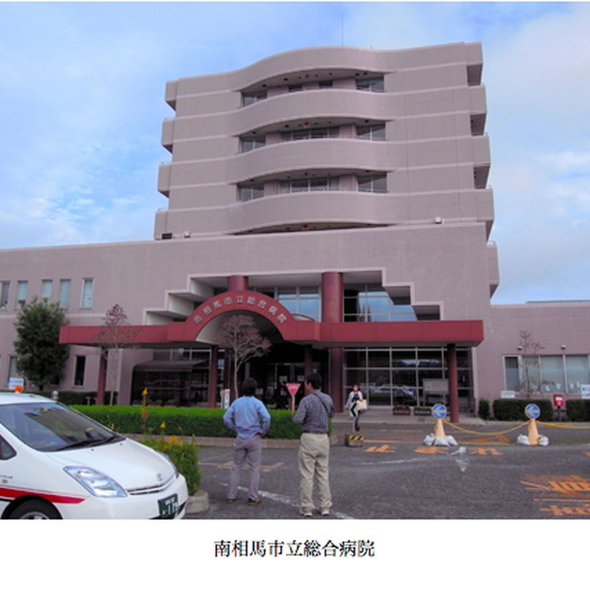
茨城県日立市の「チェルノブイリの子供を救おう会」代表、久保田護（８７）は、１１年９月にもベラルーシに行った。体内の放射能を抜くため、ベラルーシの子どもを日本に招待する活動を続けている。
着いた翌日にホールボディーカウンターで自身の内部被曝（ひばく）量を測った。体重１キロ当たり２１ベクレルが検出された。明らかに日本での内部被曝だ。同行した同県常陸太田市の教員、畠山弘恵（５７）は１９ベクレルあった。
もう１人の日立市の事務職、西野和枝（５９）は１０ベクレルと少ない。思い当たるのは１１年７～８月の欧州旅行だ。
久保田はいう。
「汚染のない食物を食べていた間に放射能が抜けたのでしょう」
ホールボディーカウンターは、測定時点で体内にある放射能量を調べる装置だ。久保田らの測定結果は、食品による内部被曝が広がっていることを示唆している。
ところが、福島県はいまだに食事を通じた内部被曝を認めない。検査で体内に確認された放射能は、１１年３月１２日に福島第一原発１号機が爆発した時に取り込んだものだけとして健康への影響を計算しているのだ。
放射能は新たに取り込まなければ減っていく。子どもは新陳代謝が速いので、小学校低学年だと１カ月前後で半分に減る。いま１キロ当たり１０ベクレルの放射能がある子どもがいるとする。食事から新たな放射能をとっていないとすると、１１年１２月に１０ベクレルになるには、３月の事故直後に１キロ当たり５千ベクレル超もの放射能を吸い込んだ計算となる。事故直後、子どもだけが大量の放射能を吸い込んでいたなんてあり得ない。
「福島県のやり方では、当初はともかく、今後は問題があります」
そう懸念するのは日本原子力研究開発機構の福島技術本部部長、飯島隆。１１年９月末、同機構は放射線医学総合研究所とともに、福島県に推計方法の見直しを提案した。食事から放射能を取り込むことを認めないと、実態にそぐわないためだ。
しかし福島県は提案を断った。地域医療課副課長の川島博文はいう。
「食品に対する不信感、不安感をあおる心配があるからです。内部被曝がわかった人に聞いても、食品からとったとは誰も言わない」
こうした福島県の態度に、ベラルーシを見続けてきた久保田は疑問を募らせている。
「食事による内部被曝は広がっています。ベラルーシのように気楽に測れる態勢が必要です」
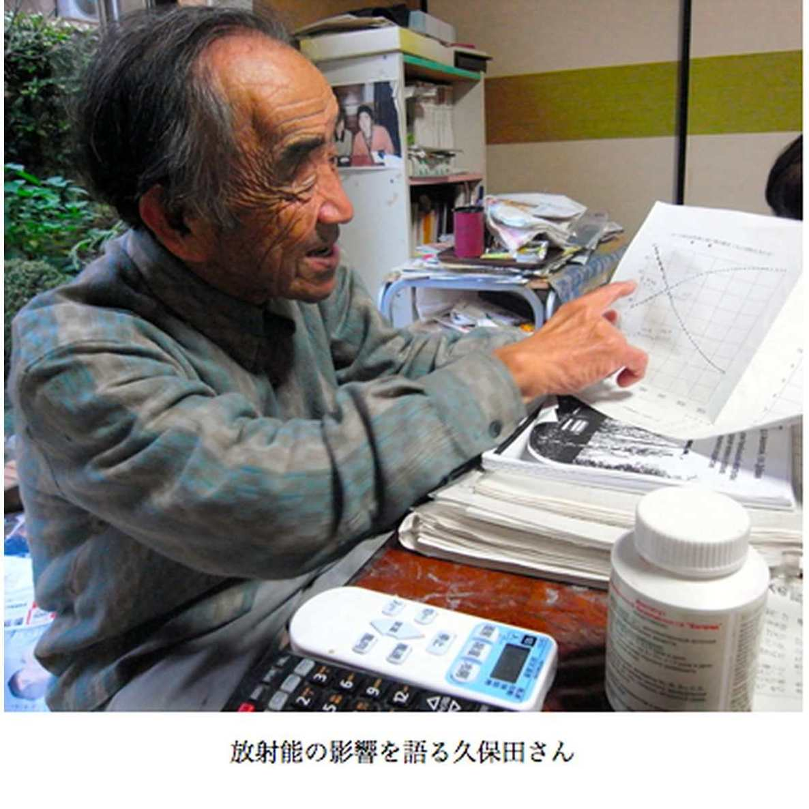
仙台市教育委員会の健康教育課長、佐藤順は、宮城県が１１年１２月７日に公表した原乳の放射能検査の結果を見て驚いた。
宮城県は、県内３カ所で原乳の放射能を測定している。その濃度が、２カ所で１キロ当たり２０ベクレル、２１ベクレルと、前週の２倍を超えていたためだ。
県内では１１年１０月、大崎市が給食を検査したときに、牛乳で２５ベクレルが計測されていた。仙台市の小学生の母親が、子どもの学校給食で使っている牛乳から放射能が出たと市教委に相談に来たことも聞いた。何らかの対策がいるな、と佐藤は思った。
仙台の牛乳を測定したのは福島県二本松市のＮＰＯ「ＴＥＡＭ二本松」だった。持ち込んだのは仙台市の自営業、横田美保（５１）だ。その後も同じブランドの１リットル入り牛乳３本から１７～２３ベクレルが検出された。
これを含めて、ＴＥＡＭ二本松は１１年１２月２２日までに複数メーカーの３７本を測定し、１１本からセシウムを検出した。いずれも暫定基準値の１キロ当たり２００ベクレルを下回り、１２年度から実施予定の５０ベクレルよりも低かった。国が「飲んでも安全」とするレベルだ。
しかし、学校給食は半ば強制的に子どもたちの口に入る。より厳しい基準が要るのではないか、という意見も少なくない。ＴＥＡＭ二本松理事長の佐々木道範（みちのり）（３９）もいう。
「給食に出す牛乳の放射能はゼロにしてほしい。たとえ他県から持ってきてでも」
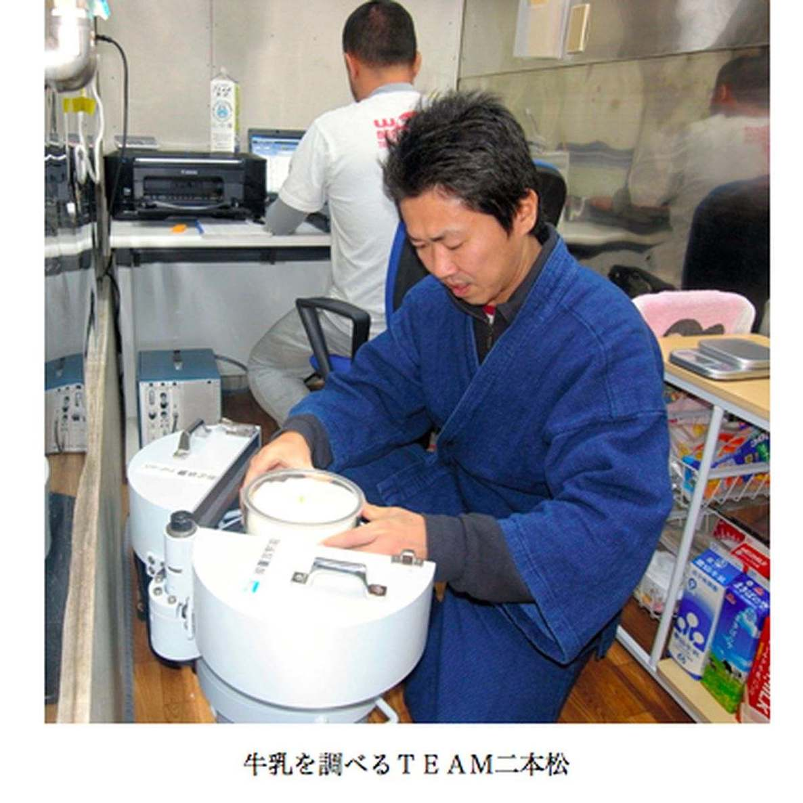
横田は、小学４年生の息子に給食の牛乳を飲むのをやめさせた。いまはお茶を持たせている。
「栄養バランスに優れた牛乳は給食のメニューから外しにくい」と佐藤はいう。当面の対策として、「放射能を理由にして飲まない子が代金を払わなくてすむ措置ができるかどうか検討しています」。
横田が指摘したメーカーは、関東・東北各県の原乳について、１１年６月から週１回、放射能検査をしてきた。検出の下限である１０ベクレルを超える放射能が検知されることもある。
メーカーに原乳を供給するのは販売農協。メーカーの担当者は「二本松の検査結果も含め、販売農協に伝えて改善を求めている」と話す。
生産者団体の宮城県酪農農協は１１年１１月半ばから動き始めている。所属の酪農農家全１８０戸を回り、えさの放射能を測定中だ。半沢善輝組合長は「放射能ゼロを目指す」という。
自分で測って確かめる消費者の動きが、メーカー、農家、自治体の対応を促している。
福島第一原発の３０キロ圏内に市域の多くが入る南相馬市の医師会は１１年４月１４日、緊急理事会を開き、解散を決議した。住民の避難にともなって医師も避難し、事務局の維持ができなくなったためだ。
翌日、長崎市医師会長の野田剛稔（たかとし）（６７）が現れ、義援金３００万円を現金で手渡してくれた。そのおかげで南相馬市医師会は解散を避けられた。医師会長の高橋亨平（７３）は「涙が出るほどうれしかった」という。
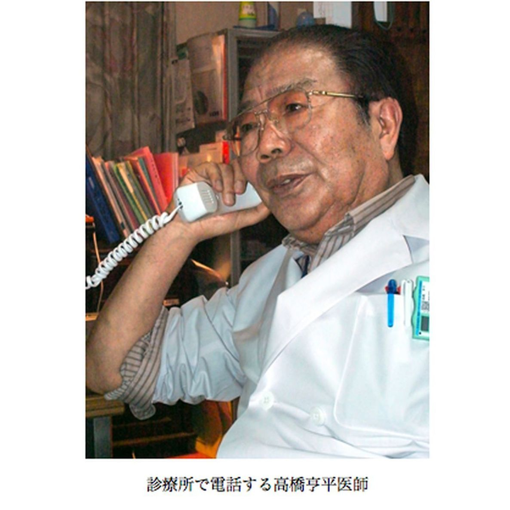
野田は「そこまで厳しいとは知らずに行った」と振り返る。「災害の時には現金が必要だと思っているので、直接行って手渡しました」
そんな厳しい状況の中、高橋は内部被曝（ひばく）を測るホールボディーカウンターが欲しいと考えていた。高橋は市内で産婦人科を開業している。妊婦の不安を考えると、少しでも早く内部被曝の実態を知りたかった。
１１年６月、米国製の最新式が購入できる可能性があると知る。ところが、現金での取引を求められた。銀行は融資に応じない。そこで、市に買うよう働きかけた。市長の桜井勝延（５５）に了解を得るものの、役所の手続きに時間がかかった。市立総合病院に入ったのは１１年９月下旬だった。
そのころ市立病院は、原発２０キロ圏内にある研究施設のホールボディーカウンターを借りて使っていた。最新式との差は歴然だった。
「古い機械でとれるデータは検出限界が高く、漫画みたいなレベルだった」と高橋はいう。「この国の国民を守る仕組みはいかにいい加減か、それが分かりました」
旧式は能率も低かった。たとえば福島県立医科大学は警察、消防など原発事故の関連で働く人を対象にホールボディーカウンターを使っている。だがその能力は、１日に１０時間使って２０人を検査するのが限界。それゆえ一般市民まで手が回らない、と説明する。南相馬市が導入した最新式は２分で結果が出るため、１時間で２０人を検査できる。
福島県は最新式を５台買い、トラックに積んで県内各地で計測する計画を立てている。すでに１台がいわき市で計測を始めている。
放射能は目に見えず、影響が出るまで時間がかかることが多い。それだけに、「内部被曝はいまの状況を知ることが大切」と長崎市医師会の野田は指摘する。
「検査の数値に過敏に反応する必要はありません。大事なのは免疫力を低下させないため生活習慣に気をつけることです」
この夏、「チェルノブイリ・ハート」という映画が封切られた。
ベラルーシの放射能汚染地帯で生まれる先天性障害の子どもたちを取材したドキュメンタリー映画だ。
ベラルーシのお隣、ウクライナ放射線医学研究センターのエフゲーニャ・ステパノワは、チェルノブイリ原発の事故処理作業者の子どもたちを研究の対象にしている。
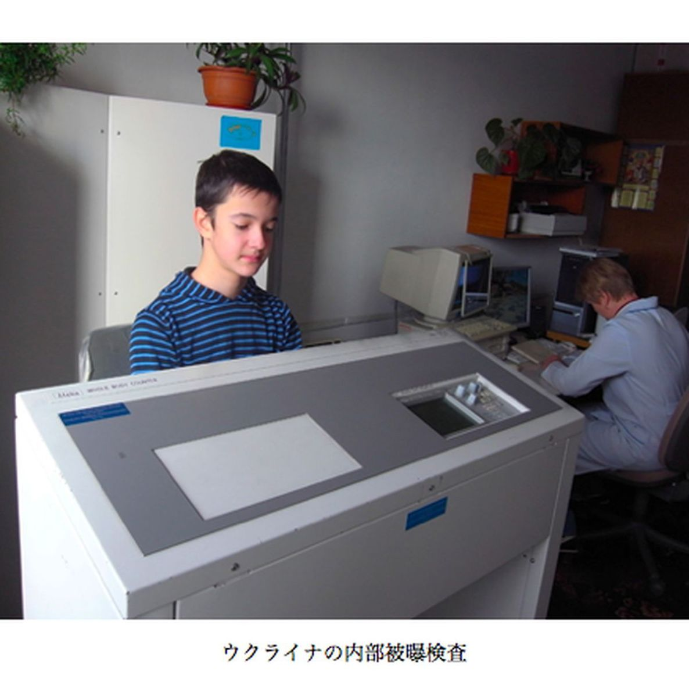
肩書は放射線・小児・先天・遺伝研究室長。専門分野について語る時、彼女の言い方は慎重になる。
「最初は全く否定されていましたが、仮説を立ててもよいという考え方も出てきました。被曝（ひばく）した両親から先天性の障害がある子どもが生まれるリスクがあるという仮説です」
もちろんあくまで仮説であり、証明はされていない。
仮説を立てたら立証したいところだが、それには調査が要る。
「国際機関や団体の資金援助を求めていますが、調査には多大な資金が必要で、とてもできません」
そして、こう言った。
「はっきりしているのは放射性ヨウ素で甲状腺がんが発生したこと。そのほかのことは分かりません」
学術的な証明のあるなしに関係なく、旧ソ連では行動があった。チェルノブイリから約１３０キロの現在の首都キエフから子どもたちを一時的に疎開させたのだ、と彼女はいう。いまも、ウクライナでは全国の市場で毎日、食品検査を行っている。
「旧ソ連時代にチェリャビンスク州で核事故が起きました。その経験で、悪い影響が出ることは予測できていたということです」
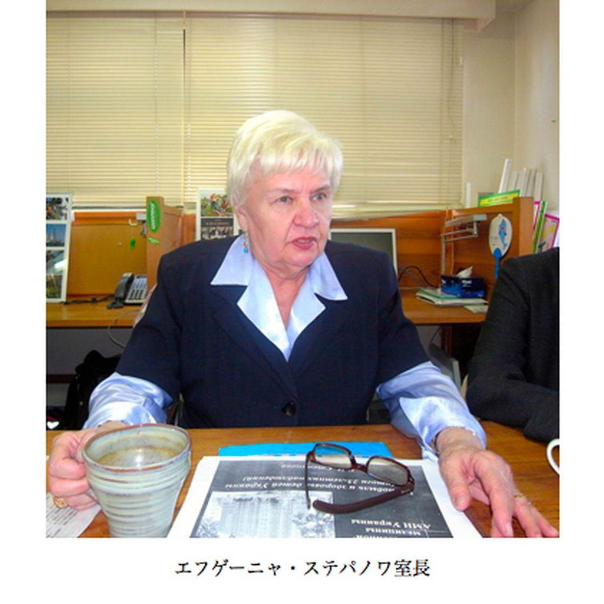
核事故は１９５７年。極秘扱いだったが、当局は放射能の人体への影響を把握していた、という。
放射能が体に与える影響を研究していてベラルーシ当局に逮捕された経験を持つバンダジェフスキーは、日本の現状を見てこう話す。
「私が研究を始めた時も国は全く協力しなかった。日本には技術がある。国民は、自分たちで健康を守るシステムを作ることが必要です」
住民自身の健康を守るため、東大理学部教授の早野龍五が提案したのが学校給食の放射能検査だった。福島県南相馬市がそれを断ったことをこの欄で紹介したが、同市は１１年１２月２８日、早野に提案の受け入れを伝えた。
少しずつ、健康を守るシステムがつくられ始めている。
プロメテウスの罠〔５〕 学長の警告「内部被曝、事態は深刻です」
著 者 朝日新聞（松浦新、上地兼太郎）
発行所 朝日新聞社
〒１０４―８０１１ 東京都中央区築地５―３―２
http://www.asahi.com/
発売所 朝日新聞社デジタル本部
〒１０４―８０１１ 東京都中央区築地５―３―２
http://www.asahi.com
２０１２年３月９日 ＷＥＢ新書版発行
２０１３年１１月３０日 ＥＰＵＢ版発行
©2012 The Asahi Shimbun Company
All rights reserved. No reproduction or republication without written permission.
ISBN 978-4-90712-554-7
〈ご注意〉本コンテンツは、購入者個人の閲覧目的のためのものです。私的範囲を越える利用・譲渡などは禁止します。
〈おことわり〉本コンテンツは２０１２年３月９日に刊行されたＷＥＢ新書版を底本としました。ＥＰＵＢ版の刊行にともない、体裁や表記を直した場合があります。 企業、組織などの名称、人物の役職、肩書等はいずれも記事初出当時のものです。